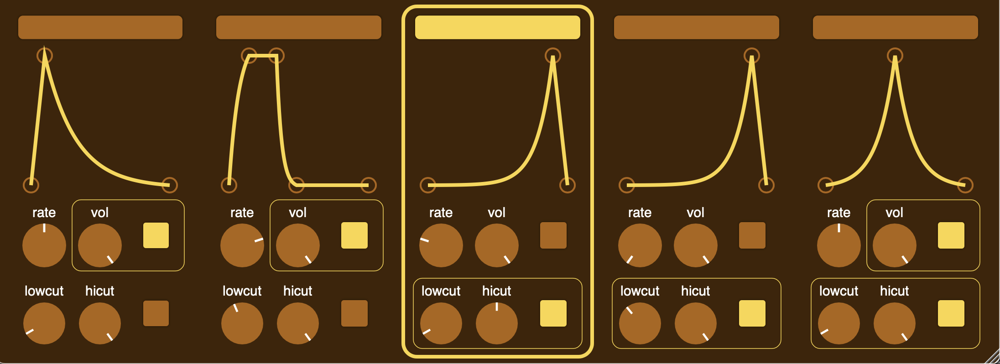

Peter Ivanov
I am a recently graduated Ph.D. student. I was fortunate to be advised by Emanuele Viola at Northeastern University. My research was in complexity theory and pseudorandomness. I am currently in the job market for industry positions.
My email is ivanov dot p at northeastern dot edu.
Papers
Resilient functions: Optimized, simplified, and generalizedPeter Ivanov, Emanuele Viola
Manuscript
Pseudorandomness, symmetry, smoothing: II
Harm Derksen, Peter Ivanov, Chin Ho Lee, Emanuele Viola
Manuscript
Pseudorandomness, symmetry, smoothing: I
Harm Derksen, Peter Ivanov, Chin Ho Lee, Emanuele Viola
CCC 2024
On correlation bounds against polynomials
Peter Ivanov, Liam Pavlovic, Emanuele Viola
CCC 2023 (Link)
Efficient resilient functions
Peter Ivanov, Raghu Meka, Emanuele Viola
SODA 2023
Affine Extractors and AC0-Parity
Xuangui Huang, Peter Ivanov, Emanuele Viola
APPROX/RANDOM 2022
Fourier Growth of Structured 𝔽₂-Polynomials and Applications
Jaroslaw Blasiok, Peter Ivanov, Yaonan Jin, Chin Ho Lee, Rocco A Servedio, Emanuele Viola
APPROX/RANDOM 2021
Personal projects
LFO ComposerAudio plugin developed in the JUCE framework (C++). It lets you edit and play different LFO shapes which affect the volume and EQ of the incoming audio.

I asked ChatGPT to remove the wrinkles in my shirt.